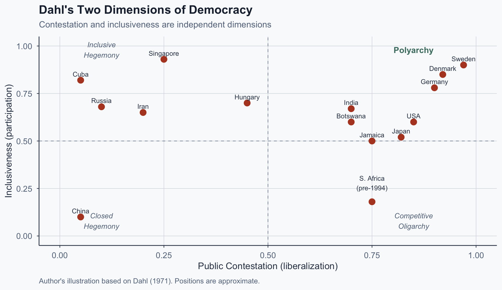
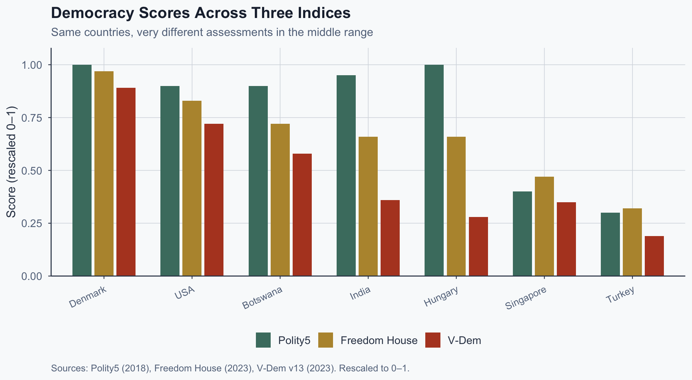
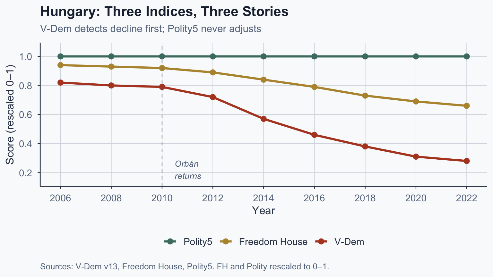
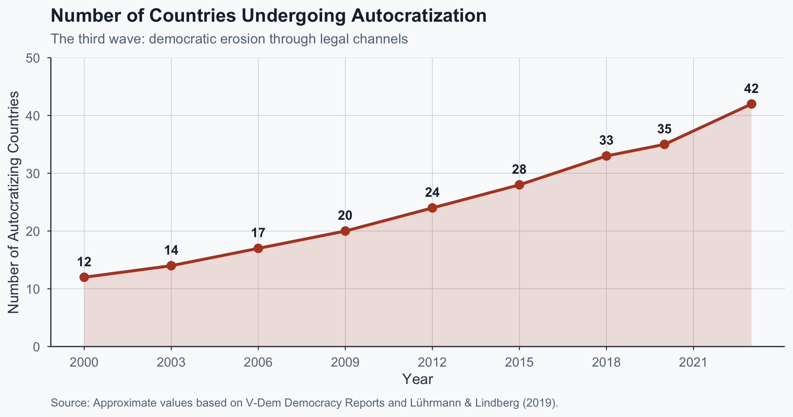
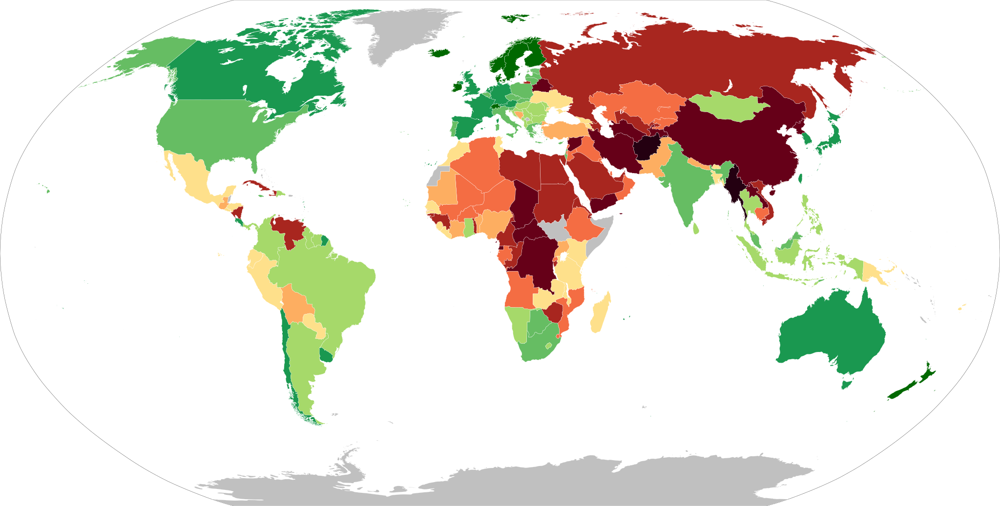
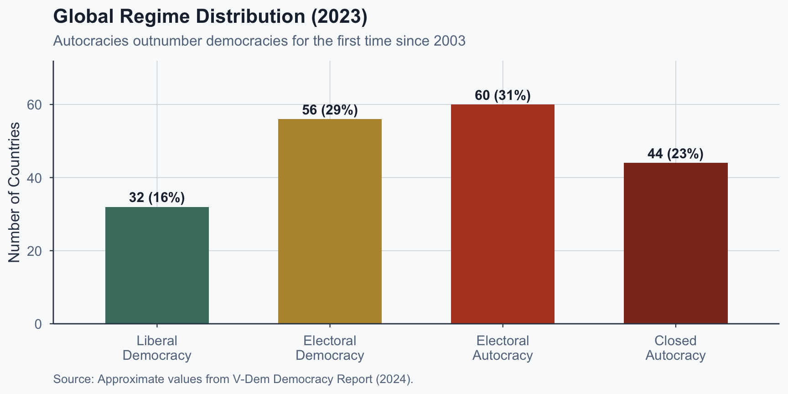
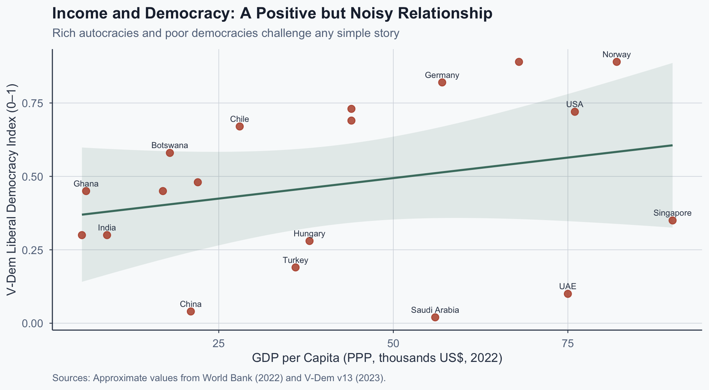

![]()
%%{init: {'theme': 'base', 'themeVariables': {'fontSize': '20px', 'primaryColor': '#4a7c6f', 'primaryTextColor': '#f9fafb', 'primaryBorderColor': '#3a6e62', 'lineColor': '#334155', 'edgeLabelBackground': '#f9fafb'}, 'flowchart': {'useMaxWidth': true, 'nodeSpacing': 50, 'rankSpacing': 60}, 'width': 1100, 'height': 650}}%%
flowchart LR
A["<b>Thin</b><br/>(Schumpeter)<br/>Elections exist"] -->|"add<br/>attributes"| B["<b>Moderate</b><br/>(Dahl)<br/>Contestation +<br/>participation"]
B -->|"add<br/>attributes"| C["<b>Thick</b><br/>(Substantive)<br/>Equality +<br/>deliberation"]
style A fill:#4a7c6f,color:#f9fafb,stroke:#3a6e62
style B fill:#b7943a,color:#f9fafb,stroke:#96792e
style C fill:#b44527,color:#f9fafb,stroke:#8c3520
Comparative Politics
Lecture 4: Conceptualizing Democracy
The Problem of Definition
Is This a Democracy?
| Country | GDP/capita | Elections? | Civil Liberties | Democracy? |
|---|---|---|---|---|
| Singapore | $90,000 | Yes | Limited | ??? |
| Russia | $36,000 | Yes | Weak | ??? |
| Hungary | $38,000 | Yes | Eroding | ??? |
| Botswana | $18,000 | Yes | Strong | ??? |
Your answer depends on your definition.
Different definitions → different classifications → different research conclusions.
Schumpeter: Elections as Method
“The democratic method is that institutional arrangement for arriving at political decisions in which individuals acquire the power to decide by means of a competitive struggle for the people’s vote.”
— Schumpeter (1942, p. 269)
The minimalist definition: democracy = competitive elections, nothing more.
- Clear, measurable, binary
- Easy to apply across many cases
- But is Singapore democratic if elections are held but unfair?
Photo: Bachrach, 1945. Public domain via Wikimedia Commons.
Przeworski: The Defense of Minimalism
Przeworski (1999) argues minimalism is a strength, not a weakness:
- Democracy = “a system in which parties lose elections”
- The key test: can incumbents actually lose power?
- Thicker definitions create moving targets
- If you require equality, no country qualifies
- Example: Is the US a democracy? Under thick definitions (deliberation, equality), scholars genuinely disagree — the concept becomes unfalsifiable
Minimalism’s strength: it generates clear, testable predictions — did the incumbent lose or not?
Dahl: Two Dimensions of Democracy
Dahl (1971) rejects a single dimension. Polyarchy requires both:
- Public contestation: can opposition compete freely?
- Inclusiveness: can all citizens participate?
These dimensions are independent — you can have one without the other:
- High contestation, low inclusiveness → competitive oligarchy
- Low contestation, high inclusiveness → inclusive hegemony
- Both high → polyarchy
Photo: Family archives. CC BY-SA 3.0 via Wikimedia Commons.
Dahl’s Political Space

Figure 1: Author’s illustration based on Dahl (1971). Positions are approximate.
Sartori’s Ladder of Abstraction
How thin or thick should our definition be?
Thinner definitions travel farther; thicker definitions capture more (Sartori, 1970).
The choice is a tradeoff tied to your research question — not a matter of being right or wrong.
So What?
There is no single “correct” definition of democracy. Every definition is a choice that determines what counts and what doesn’t.
But definitions don’t stay abstract. They get operationalized into numbers.
Next: How do the major indices turn these concepts into measures?
From Concept to Measure
Why Measurement Matters
If you ask “Does economic development cause democracy?” your answer depends on:
- How you define democracy
- How you measure it
- Where you set the threshold
Three major indices, three different measurement philosophies.
Polity: The Institutional Composite
Polity5 (Marshall & Gurr, 2020):
- Composite score from -10 (full autocracy) to +10 (full democracy)
- Codes institutional features: executive recruitment, constraints, competition
- Longest time series: 1800–2018
Strengths: historical depth, institutional focus
Weakness: coarse; Hungary scored 10 (full democracy) through 2018 even as other indices flagged decline.
Freedom House: The Checklist Approach
Freedom in the World (Freedom House, 2024):
- Rates political rights (0–40) and civil liberties (0–60)
- Aggregate score 0–100; classified as Free, Partly Free, Not Free
- Annual expert assessment since 1972
Strengths: broad coverage, includes civil liberties
Weakness: opaque thresholds; where exactly does “Free” end and “Partly Free” begin?
V-Dem: The Disaggregated Approach
Varieties of Democracy (Coppedge et al., 2023):
- Measures five principles: electoral, liberal, participatory, deliberative, egalitarian
- Continuous scores (0–1) using Bayesian IRT models
- 3,500+ country-experts, 450+ indicators
Strengths: granular, continuous, transparent methodology
Weakness: complexity; which of the five principles should you use?
Comparing the Three
| Feature | Polity5 | Freedom House | V-Dem |
|---|---|---|---|
| Scale | -10 to +10 | 0–100 | 0–1 |
| Type | Composite | Checklist | Disaggregated |
| Coverage | 1800–2018 | 1972–present | 1789–present |
| Focus | Institutions | Rights + liberties | Multiple principles |
| Output | Ordinal | Categorical + ordinal | Continuous |
Where Indices Disagree

Figure 2: Sources: Polity5 (2018), Freedom House (2023), V-Dem v13 (2023). Rescaled to 0–1.
Hungary’s Democratic Decline

Photo: Wikimedia Commons (CC BY-SA 3.0).
What the Disagreement Reveals
In 2018, Hungary was simultaneously:
- A full democracy (Polity5: score 10/10)
- Partly Free (Freedom House: 66/100)
- An electoral autocracy (V-Dem: 0.28/1.0)
This is not a minor discrepancy. It determines whether Hungary appears in your dataset as a democracy or an autocracy.
If your finding about democratic breakdown depends on which index you use, how confident should you be?
Exercise 1: Which Index, When?
Class Exercise (5 min)
Prompt: Look at the Hungary time series.
- In what year does each index first signal decline?
- Which index would you trust most — and why?
- Does your answer change depending on the research question?
So What?
Concepts become measures, and measures determine findings. The same country can be classified as a democracy or an autocracy depending on your index.
But what about countries that don’t fit neatly into either category?
Next: The gray zone between democracy and autocracy.
The Gray Zone
Between Democracy and Autocracy
Not all regimes are clearly democratic or clearly authoritarian. Many exist in between.
- They hold elections — but elections are unfair
- They have courts — but courts serve the incumbent
- They allow opposition — but opposition can’t win
How do we classify these regimes? And does it matter?
Competitive Authoritarianism
Levitsky & Way (2002) identify a specific hybrid type:
- Democratic institutions exist and are meaningful
- Opposition can organize, media exists, courts function
- But the playing field is fundamentally unequal
- Incumbents abuse state resources, manipulate media, harass opponents
Competition is real but unfair — the opposition can win, but the game is rigged against them.
How Competitive Authoritarianism Works
%%{init: {'theme': 'base', 'themeVariables': {'fontSize': '20px', 'primaryColor': '#4a7c6f', 'primaryTextColor': '#f9fafb', 'primaryBorderColor': '#3a6e62', 'lineColor': '#334155', 'edgeLabelBackground': '#f9fafb'}, 'flowchart': {'useMaxWidth': true, 'nodeSpacing': 50, 'rankSpacing': 60}, 'width': 1100, 'height': 650}}%%
flowchart LR
A["Democratic<br/>Institutions"] -->|"provide"| B["Legitimacy<br/>Veneer"]
B -->|"enables"| C["Incumbent<br/>Manipulation"]
C -->|"creates"| D["Unfair<br/>Playing Field"]
D -->|"entrenches"| E["Authoritarian<br/>Control"]
E -->|"maintains"| A
style A fill:#4a7c6f,color:#f9fafb,stroke:#3a6e62
style D fill:#b44527,color:#f9fafb,stroke:#8c3520
style E fill:#b44527,color:#f9fafb,stroke:#8c3520
Source: Author’s illustration based on Levitsky & Way (2002).
Democracy with Adjectives
Collier & Levitsky (1997) warn about conceptual stretching:
| Subtype | What it subtracts |
|---|---|
| “Illiberal democracy” | Civil liberties |
| “Delegative democracy” | Horizontal accountability |
| “Electoral democracy” | Rule of law |
| “Guided democracy” | Free competition |
| “Semi-democracy” | ??? |
Collier & Levitsky catalogued over 550 such subtypes. When every country gets its own adjective, the concept loses analytic power — we are no longer comparing like with like.
The Third Wave of Autocratization
Competitive authoritarianism is a regime type. But how do countries get there? Autocratization is the process — and it is accelerating.

Figure 4: Source: Approximate values based on V-Dem Democracy Reports and Lührmann & Lindberg (2019).
Global Regime Distribution: Map
We’ve seen the type and the process. Here is the snapshot — where does the world stand today?

Full democracy Flawed democracy Hybrid regime Authoritarian No data
Source: Economist Intelligence Unit Democracy Index (2022). Map via Wikimedia Commons (CC BY-SA 4.0).
Global Regime Distribution: Counts

Figure 5: Source: Approximate values from V-Dem Democracy Report (2024).
How Democracies Die Slowly
Contemporary autocratization works through legal channels (Lührmann & Lindberg, 2019):
Hungary (Orbán): media capture, judicial packing, electoral gerrymandering — all via parliamentary supermajority.
Turkey (Erdoğan): post-coup purges, constitutional referendum, press suppression — framed as “national security.”
Venezuela (Chávez/Maduro): constituent assembly, media nationalization, opposition bans — framed as “popular sovereignty.”
No tanks. No coups. Just incremental erosion through the institutions themselves.
Exercise 2: Classify Your Case
Class Exercise (5 min)
Prompt: Each group picks one gray-zone country (e.g., Turkey, Hungary, Venezuela, Russia, Pakistan, Nicaragua). Then:
- Classify it under Schumpeter, Dahl, and Levitsky & Way
- Find where the three frameworks produce different answers
- If you had to publish one classification in a research paper, which would you choose — and why?
So What?
The gray zone is not a residual category — it’s where most of the world lives.
Competitive authoritarianism, diminished subtypes, and autocratization all challenge clean binary classifications.
Next: Why does any of this matter for empirical research?
Why This Matters
Every Finding Embeds a Definition
When a paper claims “economic development causes democracy,” it has already made three silent choices:
- Definition: What counts as “democracy”?
- Measurement: Which index captures it?
- Threshold: Where does “not-democracy” end and “democracy” begin?
Change any of these, and the finding can change.
Income and Democracy

Figure 6: Sources: World Bank (2022), V-Dem v13 (2023). Approximate values.
Same Question, Different Answers
“Does economic development cause democratization?”
Polity (dichotomous at score 6): Przeworski et al. (2000) find a sharp threshold — democracies above ~$6,000 per capita never die.
V-Dem (continuous): The relationship attenuates. No sharp threshold — richer countries are somewhat more democratic.
Freedom House (civil liberties): Different dimension entirely — picks up rights constraints that income doesn’t predict well.
Three measures. Three conclusions. Same data.
The Conceptual-Empirical Pipeline
%%{init: {'theme': 'base', 'themeVariables': {'fontSize': '22px', 'primaryColor': '#4a7c6f', 'primaryTextColor': '#f9fafb', 'primaryBorderColor': '#3a6e62', 'lineColor': '#b44527', 'edgeLabelBackground': '#f9fafb'}, 'flowchart': {'useMaxWidth': true, 'nodeSpacing': 50, 'rankSpacing': 70}, 'width': 1100, 'height': 650}}%%
flowchart LR
A["What is<br/>democracy?<br/><br/><i>Concept</i>"] --> B["Which<br/>attributes?<br/><br/><i>Definition</i>"]
B --> C["Which<br/>index?<br/><br/><i>Measurement</i>"]
C --> D["Where is<br/>the threshold?<br/><br/><i>Classification</i>"]
D --> E["What do<br/>we find?<br/><br/><i>Result</i>"]
Source: Author’s illustration.
Every link is a choice. Good research makes those choices explicit.
The Single Takeaway
Important
Definitional choices have empirical consequences. There is no neutral measure of democracy — only measures whose assumptions are explicit or hidden.
- Minimalist definitions are clear but miss erosion
- Maximalist definitions capture more but apply to fewer cases
- The best research tests whether findings survive across multiple measures
References
References I
Collier, D., & Levitsky, S. (1997). Democracy with adjectives: Conceptual innovation in comparative research. World Politics, 49(3), 430–451.
Coppedge, M., Gerring, J., Knutsen, C. H., Lindberg, S. I., Teorell, J., et al. (2023). V-Dem codebook v13. Varieties of Democracy (V-Dem) Project.
Dahl, R. A. (1971). Polyarchy: Participation and opposition. Yale University Press.
Economist Intelligence Unit. (2022). Democracy Index 2022: Frontline democracy and the battle for Ukraine. EIU.
Freedom House. (2024). Freedom in the world 2024. Freedom House.
Levitsky, S., & Way, L. A. (2002). The rise of competitive authoritarianism. Journal of Democracy, 13(2), 51–65.
Lührmann, A., & Lindberg, S. I. (2019). A third wave of autocratization is here: What is new about it? Democratization, 26(7), 1095–1113.
References II
Marshall, M. G., & Gurr, T. R. (2020). Polity5: Political regime characteristics and transitions, 1800–2018. Center for Systemic Peace.
Przeworski, A. (1999). Minimalist conception of democracy: A defense. In I. Shapiro & C. Hacker-Cordón (Eds.), Democracy’s value (pp. 23–55). Cambridge University Press.
Przeworski, A., Alvarez, M. E., Cheibub, J. A., & Limongi, F. (2000). Democracy and development: Political institutions and well-being in the world, 1950–1990. Cambridge University Press.
Sartori, G. (1970). Concept misformation in comparative politics. American Political Science Review, 64(4), 1033–1053.
Schumpeter, J. A. (1942). Capitalism, socialism, and democracy. Harper & Brothers.
World Bank. (2022). World Development Indicators. The World Bank Group.
Popescu (JCU) Comparative Politics Lecture 4: Conceptualizing Democracy